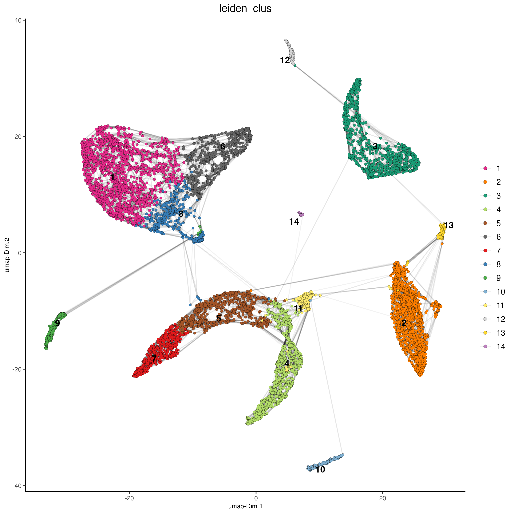
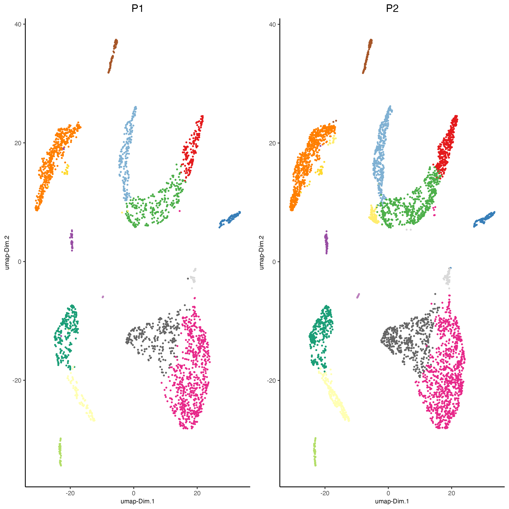

vignettes/singlecell_prostate_integration.Rmd
singlecell_prostate_integration.RmdThis is a tutorial for Harmony integration of different single cell RNAseq datasets using two prostate cancer patient datasets. Ma et al. Processed 10X Single Cell RNAseq from two prostate cancer patients. The raw dataset can be found here
# Ensure Giotto Suite is installed.
if(!"Giotto" %in% installed.packages()) {
pak::pkg_install("drieslab/Giotto")
}
# Ensure the Python environment for Giotto has been installed.
genv_exists = Giotto::checkGiottoEnvironment()
if(!genv_exists){
# The following command need only be run once to install the Giotto environment.
Giotto::installGiottoEnvironment()
}
library(Giotto)
# 1. set working directory
results_folder = 'path/to/result'
# Optional: Specify a path to a Python executable within a conda or miniconda
# environment. If set to NULL (default), the Python executable within the previously
# installed Giotto environment will be used.
my_python_path = NULL # alternatively, "/local/python/path/python" if desired.
# 2. create giotto instructions
instrs = createGiottoInstructions(save_dir = results_folder,
save_plot = TRUE,
show_plot = FALSE,
python_path = my_python_path)
data_dir = "path/to/data/"
expression1 = read.table(paste0(data_dir, "GSM4773521_PCa1_gene_counts_matrix.txt"))
giotto_P1 <- createGiottoObject(expression = expression1,
instructions = instrs)
expression2 = read.table(paste0(data_dir, "GSM4773522_PCa2_gene_counts_matrix.txt"))
giotto_P2 <- createGiottoObject(expression = expression2,
instructions = instrs)
giotto_SC_join <- joinGiottoObjects(gobject_list = list(giotto_P1, giotto_P2),
gobject_names = c('P1', 'P2'),
join_method = "z_stack")
# filter
giotto_SC_join <- filterGiotto(gobject = giotto_SC_join,
expression_threshold = 1,
feat_det_in_min_cells = 50,
min_det_feats_per_cell = 500,
expression_values = c('raw'),
verbose = T)
## normalize
giotto_SC_join <- normalizeGiotto(gobject = giotto_SC_join,
scalefactor = 6000)
## add gene & cell statistics
giotto_SC_join <- addStatistics(gobject = giotto_SC_join,
expression_values = 'raw')
## PCA ##
giotto_SC_join <- calculateHVF(gobject = giotto_SC_join)
giotto_SC_join <- runPCA(gobject = giotto_SC_join,
center = TRUE,
scale_unit = TRUE)
# Check screeplot to select number of PCs for clustering
# screePlot(giotto_SC_join, ncp = 30, save_param = list(save_name = '3_scree_plot'))
## WITHOUT INTEGRATION ##
# --------------------- #
## cluster and run UMAP ##
# sNN network (default)
showGiottoDimRed(giotto_SC_join)
giotto_SC_join <- createNearestNetwork(gobject = giotto_SC_join,
dim_reduction_to_use = 'pca',
dim_reduction_name = 'pca',
dimensions_to_use = 1:10,
k = 15)
# Leiden clustering
giotto_SC_join <- doLeidenCluster(gobject = giotto_SC_join,
resolution = 0.2,
n_iterations = 1000)
# UMAP
giotto_SC_join <- runUMAP(giotto_SC_join)
plotUMAP(gobject = giotto_SC_join,
cell_color = 'leiden_clus',
show_NN_network = T,
point_size = 1.5,
save_param = list(save_name = "4_cluster_without_integration"))
dimPlot2D(gobject = giotto_SC_join,
dim_reduction_name = 'umap',
point_shape = 'no_border',
cell_color = "leiden_clus",
group_by = "list_ID",
show_NN_network = F,
point_size = 0.5,
show_center_label = F,
show_legend = F,
save_param = list(save_name = "4_list_without_integration"))Harmony is a integration algorithm developed by Korsunsky, I. et al.. It was designed for integration of single cell data but also work well on spatial datasets.
## WITH INTEGRATION ##
# --------------------- #
## data integration, cluster and run UMAP ##
# harmony
#library(devtools)
#install_github("immunogenomics/harmony")
library(harmony)
#pDataDT(giotto_SC_join)
giotto_SC_join <- runGiottoHarmony(giotto_SC_join,
vars_use = 'list_ID',
do_pca = F)
## sNN network (default)
#showGiottoDimRed(giotto_SC_join)
giotto_SC_join <- createNearestNetwork(gobject = giotto_SC_join,
dim_reduction_to_use = 'harmony',
dim_reduction_name = 'harmony',
name = 'NN.harmony',
dimensions_to_use = 1:10,
k = 15)
## Leiden clustering
giotto_SC_join <- doLeidenCluster(gobject = giotto_SC_join,
network_name = 'NN.harmony',
resolution = 0.2,
n_iterations = 1000,
name = 'leiden_harmony')
# UMAP dimension reduction
#showGiottoDimRed(giotto_SC_join)
giotto_SC_join <- runUMAP(giotto_SC_join,
dim_reduction_name = 'harmony',
dim_reduction_to_use = 'harmony',
name = 'umap_harmony')
plotUMAP(gobject = giotto_SC_join,
dim_reduction_name = 'umap_harmony',
cell_color = 'leiden_harmony',
show_NN_network = T,
point_size = 1.5,
save_param = list(save_name = "4_cluster_with_integration"))
dimPlot2D(gobject = giotto_SC_join,
dim_reduction_name = 'umap_harmony',
point_shape = 'no_border',
cell_color = "leiden_harmony",
group_by = "list_ID",
show_NN_network = F,
point_size = 0.5,
show_center_label = F,
show_legend =F ,
save_param = list(save_name = "4_list_with_integration")) # 4. Session Info
R version 4.3.2 (2023-10-31)
Platform: aarch64-apple-darwin20 (64-bit)
Running under: macOS Sonoma 14.2.1
Matrix products: default
BLAS: /System/Library/Frameworks/Accelerate.framework/Versions/A/Frameworks/vecLib.framework/Versions/A/libBLAS.dylib
LAPACK: /Library/Frameworks/R.framework/Versions/4.3-arm64/Resources/lib/libRlapack.dylib; LAPACK version 3.11.0
locale:
[1] en_US.UTF-8/en_US.UTF-8/en_US.UTF-8/C/en_US.UTF-8/en_US.UTF-8
time zone: America/New_York
tzcode source: internal
attached base packages:
[1] stats graphics grDevices utils datasets methods base
other attached packages:
[1] harmony_1.2.0 Rcpp_1.0.12 Giotto_4.0.3 GiottoClass_0.1.3
loaded via a namespace (and not attached):
[1] tidyselect_1.2.0 farver_2.1.1 dplyr_1.1.4
[4] GiottoVisuals_0.1.4 bitops_1.0-7 fastmap_1.1.1
[7] SingleCellExperiment_1.24.0 RCurl_1.98-1.14 rsvd_1.0.5
[10] digest_0.6.34 lifecycle_1.0.4 terra_1.7-71
[13] dbscan_1.1-12 magrittr_2.0.3 compiler_4.3.2
[16] rlang_1.1.3 tools_4.3.2 igraph_2.0.2
[19] utf8_1.2.4 yaml_2.3.8 data.table_1.15.0
[22] knitr_1.45 S4Arrays_1.2.0 labeling_0.4.3
[25] reticulate_1.35.0 DelayedArray_0.28.0 RColorBrewer_1.1-3
[28] BiocParallel_1.36.0 abind_1.4-5 withr_3.0.0
[31] BiocGenerics_0.48.1 grid_4.3.2 stats4_4.3.2
[34] fansi_1.0.6 beachmat_2.18.1 colorspace_2.1-0
[37] future_1.33.1 ggplot2_3.4.4 globals_0.16.2
[40] scales_1.3.0 gtools_3.9.5 SummarizedExperiment_1.32.0
[43] cli_3.6.2 rmarkdown_2.25 crayon_1.5.2
[46] ragg_1.2.7 generics_0.1.3 rstudioapi_0.15.0
[49] future.apply_1.11.1 rjson_0.2.21 zlibbioc_1.48.0
[52] parallel_4.3.2 XVector_0.42.0 matrixStats_1.2.0
[55] vctrs_0.6.5 Matrix_1.6-5 jsonlite_1.8.8
[58] BiocSingular_1.18.0 IRanges_2.36.0 S4Vectors_0.40.2
[61] ggrepel_0.9.5 irlba_2.3.5.1 listenv_0.9.1
[64] systemfonts_1.0.5 magick_2.8.3 GiottoUtils_0.1.5
[67] glue_1.7.0 parallelly_1.37.0 codetools_0.2-19
[70] uwot_0.1.16 cowplot_1.1.3 RcppAnnoy_0.0.22
[73] gtable_0.3.4 GenomeInfoDb_1.38.6 GenomicRanges_1.54.1
[76] ScaledMatrix_1.10.0 munsell_0.5.0 tibble_3.2.1
[79] pillar_1.9.0 htmltools_0.5.7 GenomeInfoDbData_1.2.11
[82] R6_2.5.1 textshaping_0.3.7 evaluate_0.23
[85] lattice_0.22-5 Biobase_2.62.0 png_0.1-8
[88] backports_1.4.1 RhpcBLASctl_0.23-42 SpatialExperiment_1.12.0
[91] SparseArray_1.2.4 checkmate_2.3.1 colorRamp2_0.1.0
[94] xfun_0.42 MatrixGenerics_1.14.0 pkgconfig_2.0.3